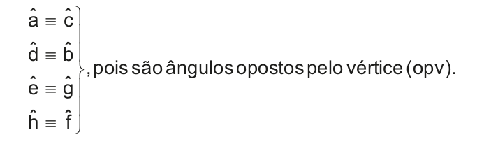
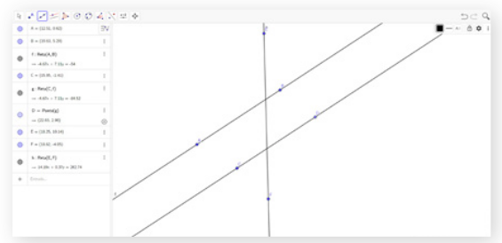
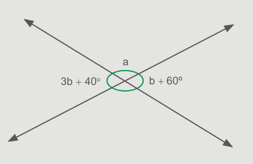
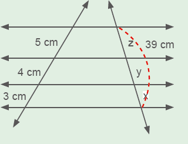

| Principais habilidades da BNCC | EF07MA23, EF07MA34 |
|---|---|
| Competências | CE5, CE8, CG9 |
Para que os alunos possam compreender melhor as relações entre os ângulos, conforme o desenvolvimento da nomenclatura, solicite que realizem as medições com o transferidor para verificar os ângulos que possuem a mesma medida e os ângulos que são suplementares.
Questione os alunos sobre o que eles entendem sobre o termo transversal. Em seguida, explore o mapa da página mostrando aos alunos duas ruas paralelas, representando retas, e pergunte como seria uma reta transversal a elas. Após identificar uma reta transversal, seguindo a indicação dos alunos, nomeie os ângulos conforme a imagem do livro. Questione os alunos se eles notam relações nas medidas dos ângulos ali presentes.
EF07MA01
EF07MA23
CAPÍTULO 4 - Ângulos formados por retas paralelas com uma transversal
Observe a seguir a representação de algumas ruas da cidade de Curitiba, capital do Paraná.
![Ilustração de um trecho de mapa, mostrando algumas ruas da cidade de Curitiba. São quatro ruas na horizontal, paralelas, de cima para baixo: Rua sem identificação, Rua Inácio Lustosa, Rua Paula Gomes e Rua Presidente Carlos Cavalcanti. E quatro outras ruas, três na vertical e uma na transversal, cruzam as paralelas, da esquerda para direita: Rua sem identificação, na vertical, Rua Portugal, na vertical, Rua João Manoel, na transversal, e Rua Almirante Barroso, na vertical.
Fonte: Lista on-line.
Disponível em: www.listaonline.com.br.Acesso em: 2 jun. 2011.](../../resources/images/unidade6/capitulo4/imagem1.png)
1. Observe no mapa a localização das ruas Paula Gomes e Presidente Carlos Cavalcanti. Troque ideias com um colega e escrevam, no caderno, como podemos descrever a posição relativa entre elas. Elas nos dão a ideia de serem paralelas.

a) Como poderíamos descrever a posição relativa da Rua João Manoel em relação às ruas Paula Gomes e Presidente Carlos Cavalcanti? É uma rua transversal às duas ruas.
Vamos representar essas ruas por duas retas paralelas cortadas por uma reta transversal. Observe:
![Ilustração de duas retas paralelas, horizontalmente, a de cima denominada r, e a de baixo denominada s. Elas estão cortadas, por uma terceira reta, na transversal, levemente inclinada para direita, denominada t, formando oito ângulos correspondentes. Na reta r, temos os ângulos 1, 2, 3 e 4, e na reta s, temos os ângulos 5, 6, 7 e 8. Os quatro ângulos da reta r são correspondentes aos quatro ângulos da reta s:
- ângulo 1 correspondente ao ângulo 5;
- ângulo 2 correspondente ao ângulo 6;
- ângulo 3 correspondente ao ângulo 7;
- ângulo 4 correspondente ao ângulo 8.](../../resources/images/unidade6/capitulo4/imagem2.png)
A reta t determina, sobre as retas r e s, oito ângulos.
Veremos, agora, as relações existentes entre esses ângulos.
209
UNIDADE 6 - CAPÍTULO 4
209
Após a explicação, faça no quadro de giz uma síntese do conteúdo, quanto às posições relativas entre eles nas retas paralelas e na transversal:
► Ângulos correspondentes: na mesma posição em relação às paralelas, à transversal e são congruentes.
► Ângulos alternos externos: em lados diferentes em relação à transversal, na parte externa em relação às paralelas e são congruentes.
► Ângulos alternos internos: em lados diferentes em relação à transversal, na parte interna em relação às paralelas e são congruentes.
► Ângulos colaterais externos: do mesmo lado em relação à transversal, na parte externa em relação às paralelas e são suplementares.
► Ângulos colaterais internos: do mesmo lado em relação à transversal, na parte interna em relação às paralelas e são suplementares.
EF07MA01
Ângulos correspondentes
Usando o transferidor, podemos perceber que os ângulos de mesma cor têm a mesma medida. Esses ângulos congruentes são denominados ângulos correspondentes.
![Ilustração de duas retas paralelas, horizontalmente, a de cima denominada r, e a de baixo denominada s. Elas estão cortadas, por uma terceira reta, na transversal, levemente inclinada para direita, formando ângulos correspondentes, oito deles com marcadores.
Marcações dos ângulos na reta r:
- Marcador ângulo a em vermelho: localizado à esquerda da reta transversal e por cima da reta r;
- Marcador ângulo b em verde: localizado à direita da reta transversal e por cima da reta r;
- Marcador ângulo c em amarelo: localizado à direita da reta transversal e por baixo da reta r;
- Marcador ângulo d em azul: localizado à esquerda da reta transversal e por baixo da reta r.
Marcações dos ângulos na reta s:
- Marcador ângulo e em vermelho: localizado à esquerda da reta transversal e por cima da reta s;
- Marcador ângulo f em verde: localizado à direita da reta transversal e por cima da reta s;
- Marcador ângulo g em amarelo: localizado à direita da reta transversal e por baixo da reta s;
- Marcador ângulo h em azul: localizado à esquerda da reta transversal e por baixo da reta s.](../../resources/images/unidade6/capitulo4/imagem4.png)
Portanto, são ângulos correspondentes: â e ê, b̂ e f̂ , d̂ e ĥ e ĉ e ĝ.
Temos ainda que:
Os ângulos â, b̂, ĥ e ĝ são ângulos externos às retas r e s e os ângulos d̂, ĉ, ê e f̂ são ângulos internos às retas r e s.
Vamos considerar:
a = med (â)
b = med (b̂)
c = med (ĉ)
d = med (d̂)
e = med (ê)
f = med (f̂)
g = med (ĝ)
h = med (ĥ)
![Ilustração de duas retas paralelas, horizontalmente, a de cima denominada r, e a de baixo denominada s. Elas estão cortadas, por uma terceira reta, nomeada de t, na transversal, levemente inclinada para direita, formando ângulos correspondentes, quatro deles com marcadores identificados com cores iguais.
Marcações dos ângulos na reta r:
- Marcador a em vermelho: localizado à esquerda da reta transversal e por cima da reta r;
- Marcador b em verde: localizado à direita da reta transversal e por cima da reta r;
- Marcador c em amarelo: localizado à direita da reta transversal e por baixo da reta r;
- Marcador d em azul: localizado à esquerda da reta transversal e por baixo da reta r.
Marcações dos ângulos na reta s:
- Marcador e em vermelho: localizado à esquerda da reta transversal e por cima da reta s;
- Marcador f em verde: localizado à direita da reta transversal e por cima da reta s;
- Marcador g em amarelo: localizado à direita da reta transversal e por baixo da reta s;
- Marcador h em azul: localizado à esquerda da reta transversal e por baixo da reta s.](../../resources/images/unidade6/capitulo4/imagem5.png)
210
UNIDADE 6 - CAPÍTULO 5
210
EF07MA01
Tomando como base esses ângulos, temos as seguintes relações:
Ângulos alternos
![Ilustração de duas retas paralelas, horizontalmente, a de cima denominada r, e a de baixo denominada s. Elas estão cortadas, por uma terceira reta, nomeada de t, na transversal, levemente inclinada para direita. Na ilustração cinco ângulos são identificados.
Marcações dos ângulos na reta r:
- Marcador a em vermelho: localizado à esquerda da reta transversal e por cima da reta r;
- Marcador d em azul: localizado à esquerda da reta transversal e por baixo da reta r.
- Marcador c em amarelo: localizado à direita da reta transversal e por baixo da reta r.
Marcações dos ângulos na reta s:
- Marcador e em vermelho: localizado à esquerda da reta transversal e por cima da reta s;
- Marcador f em verde: localizado à direita da reta transversal e por cima da reta s.](../../resources/images/unidade6/capitulo4/imagem6.png)
Os ângulos â e d̂, assim como ê e f̂ são suplementares, portanto, a + d = 180º e e + f = 180º. Logo, a + d = e + f.
Como a = e (ângulos correspondentes) e a + d = e + f, temos que d = f.
Os ângulos d̂ e f̂ são denominados ângulos alternos internos e são congruentes. Da mesma forma, os ângulos ĉ e ê, são alternos internos, por- tanto temos que d̂ ≡ f̂ e ĉ ≡ ê.
![Ilustração de duas retas paralelas, horizontalmente, a de cima denominada r, e a de baixo denominada s. Elas estão cortadas, por uma terceira reta, nomeada de t, na transversal, levemente inclinada para direita, formando ângulo, cinco deles com marcadores.
Marcações dos ângulos na reta r:
- Marcador a em vermelho: localizado à esquerda da reta transversal e por cima da reta r;
- Marcador b em verde: localizado à direita da reta transversal e por cima da reta r.
Marcações dos ângulos na reta s:
- Marcador e em vermelho: localizado à esquerda da reta transversal e por cima da reta s;
- Marcador g em amarelo: localizado à direita da reta transversal e por baixo da reta s;
- Marcador h em azul: localizado à esquerda da reta transversal e por baixo da reta s.](../../resources/images/unidade6/capitulo4/imagem7.png)
Vamos considerar agora os ângulos de medidas a, e e g.
Os ângulos â e ê são correspondentes, portanto, são congruentes. Os ângulos ê e ĝ são opostos pelo vértice e por isso são congruentes. Desta forma, temos que se â ≡ ê e ê ≡ ĝ, então â ≡ ĝ.
Os ângulos â e ĝ são denominados ângulos alternos externos e são congruentes. Da mesma forma, os ângulos b̂ e ĥ, são alternos externos, portanto, temos que â ≡ ĝ e b̂ ≡ ĥ.
Ângulos colaterais
![Ilustração de duas retas paralelas, horizontalmente, a de cima denominada r, e a de baixo denominada s. Elas estão cortadas, por uma terceira reta, nomeada de t, na transversal, levemente inclinada para direita, formando ângulos, cinco deles com marcadores identificados.
Marcações dos ângulos na reta r:
- Marcador a em vermelho: localizado à esquerda da reta transversal e por cima da reta r;
- Marcador c em amarelo: localizado à direita da reta transversal e por baixo da reta r;
- Marcador d em azul: localizado à esquerda da reta transversal e por baixo da reta r.
Marcações dos ângulos na reta s:
- Marcador e em vermelho: localizado à esquerda da reta transversal e por cima da reta s;
- Marcador f em verde: localizado à direita da reta transversal e por cima da reta s.](../../resources/images/unidade6/capitulo4/imagem8.png)
211
UNIDADE 6 - CAPÍTULO 4
211
Encontre soluções
Atividade 2
a) Como os ângulos são colaterais internos, eles são suplementares.
x + 130° = 180°
x = 50º
b) Os ângulos são correspondentes, portanto apresentam a mesma
medida.
y = 45°
c) Os ângulos são correspondentes, apresentando a mesma medida.
a = 120°
d) Os ângulos são alternos internos, apresentando a mesma medida.
z = 85°
Atividade 3
2x - 40° = x + 20°
x = 60°
Medidas dos ângulos:
x + 20° = 60° + 20° = 80°.
a) 3x - 10° = x + 50°
2x = 60°
x = 30°
3x - 10° = 80°
x + 50° = 80°
y = 100° e z = 80°
b) 8x + 4x = 180°
12x = 180°
x = 15°
8x = 120°
4x = 60°
y = 60° e z = 60°
c) 7x - 30° + x + 18° = 180°
8x = 192°
x = 24°
7x - 30° = 138°
x + 18° = 42°
y = 42° e z = 42°
EF07MA01
Os ângulos â e d̂ são suplementares, portanto a + d = 180º e a = e, pois são ângulos correspondentes. Logo, d + e = 180º.
Os ângulos d̂ e ê são denominados ângulos colaterais internos e são suplementares. Da mesma forma, os ângulos ĉ e f̂ são colaterais internos, portanto, temos que d + e = 180º e c + f = 180º.
![Ilustração de duas retas paralelas, horizontalmente, a de cima denominada r, e a de baixo denominada s. Elas estão cortadas, por uma terceira reta, nomeada de t, na transversal, levemente inclinada para direita, formando ângulos, seis deles com marcadores identificados.
Marcações dos ângulos na reta r:
- Marcador a em vermelho: localizado à esquerda da reta transversal e por cima da reta r;
- Marcador b em verde: localizado à direita da reta transversal e por cima da reta r;
- Marcador c em amarelo: localizado à direita da reta transversal e por baixo da reta r.
Marcações dos ângulos na reta s:
- Marcador f em verde: localizado à direita da reta transversal e por cima da reta s;
- Marcador g em amarelo: localizado à direita da reta transversal e por baixo da reta s;
- Marcador h em azul: localizado à esquerda da reta transversal e por baixo da reta s.](../../resources/images/unidade6/capitulo4/imagem9.png)
Vamos considerar agora os ângulos de medidas b, f e g.
Os ângulos b̂ e f̂ são correspondentes, logo são congruentes, por isso temos b = f. Os ângulos f̂ e ĝ são suplementares, portanto f + g = 180º. Desta forma, podemos concluir que b + g = 180º.
Os ângulos b̂ e ĝ, são denominados ângulos colaterais externos e são suplementares. Da mesma forma, os ângulos â e ĥ são colaterais externos, portanto, temos que b + g = 180º e a + h = 180º.
ENCONTRE SOLUÇÕES
1. Observe a figura e escreva, em seu ca- derno, como são chamados os pares de ângulos, sabendo que r // s e t // u.
![Ilustração de duas retas paralelas, horizontalmente, a de cima denominada t, e a de baixo denominada u. Elas estão cortadas, por duas retas na transversal, nomeadas de r e s, formando ângulos, oito deles com marcadores identificados.
Marcações dos ângulos na reta t, cortado pela reta transversal r:
- Marcador a: localizado à esquerda da reta transversal e por cima da reta t;
- Marcador b: localizado à direita da reta transversal e por cima da reta t.
Marcações dos ângulos na reta t, cortado pela reta transversal s:
- Marcador c: localizado à direita da reta transversal e por cima da reta t.
- Marcador d: localizado à esquerda da reta transversal e por baixo da reta t.
- Marcador e: localizado à esquerda da reta transversal e por baixo da reta t.
Marcações dos ângulos na reta u, cortado pela reta transversal r:
- Marcador f: localizado à direita da reta transversal e por cima da reta u;
- Marcador h: localizado à esquerda da reta transversal e por baixo da reta u.
Marcação do ângulo na reta u, cortado pela reta transversal s:
- Marcador g: localizado à direita da reta transversal e por cima da reta u;](../../resources/images/unidade6/capitulo4/imagem10.png)
a) â e ĉ
b) f̂ e ĝ
c) ĥ e b̂
d) ê e ĝ
e) f̂ e b̂
f) d̂ e ĝ
2. Sendo r // s, escreva, em seu caderno, a medida dos ângulos assinalados nas figuras.
a)

b)

c)

d)

212
UNIDADE 6 - CAPÍTULO 4
212
d) x + 115° = 180°
x = 65°
y = 115°
140° + z = 180°
z = 40°
Atividade 5
Menor ângulo: x
Maior ângulo: 3x
3x + x = 180°
4x = 180°
x = 45°
Os ângulos medem 45° e 135°.
Atividade 6
Menor ângulo: x
Maior ângulo: x + 72°
x + x + 72° = 180°
2x = 180° - 72°
2x = 108°
x = 54°
Os ângulos medem 54° e 126°.
Atividade 7
x = 180° - 100° - 30°
x = 50°
Atividade 8
a = 180° - 60° = 120°
45° 30’ + b = 120°
b = 74° 30’
c = 180° - 74° 30’
c = 105° 30’
Atividade 9

75° + 57° + x = 180°
x = 48°
O ângulo BˆC D mede 48°.
EF07MA01
3. Dadas duas retas paralelas cortadas por uma transversal, dois ângulos correspondentes são expressos, em graus, por 2x - 40º e x + 20º. Determine as medidas desses ângulos. 80º
4. Calcule, em seu caderno, as medidas dos ângulos indicados nas figuras.
a) r // s
x = 30º, y = 100º e z = 80º.![Ilustração de duas retas paralelas, horizontalmente, a de cima denominada r, e a de baixo denominada s. Elas estão cortadas, por uma terceira reta, na transversal, levemente inclinada para direita, formando ângulos correspondentes, quatro deles com marcadores. Marcações dos ângulos:
- Marcador y: localizado à esquerda da reta transversal e por cima da reta r;
- Marcador 3x-10º: localizado à direita da reta transversal e por cima da reta r;
- Marcador x+50º: localizado à direita da reta transversal e por cima da reta s;
- Marcador z: localizado à esquerda da reta transversal e por baixo da reta s.](../../resources/images/unidade6/capitulo4/imagem15.png)
b) r // s
x = 15º, y = 60º e z = 60º.![Ilustração de duas retas paralelas, horizontalmente, a de cima denominada r, e a de baixo denominada s. Elas estão cortadas, por uma terceira reta, na transversal, levemente inclinada para direita, formando ângulos correspondentes, quatro deles com marcadores. Marcações dos ângulos:
- Marcador y: localizado à direita da reta transversal e por cima da reta r;
- Marcador 8x: localizado à direita da reta transversal e por baixo da reta r;
- Marcador 4x: localizado à direita da reta transversal e por cima da reta s;
- Marcador z: localizado à esquerda da reta transversal e por baixo da reta s.](../../resources/images/unidade6/capitulo4/imagem16.png)
c) t // u
x = 24º, y = 42º e z = 42º.![Ilustração de duas retas paralelas, horizontalmente, a de cima denominada r, e a de baixo denominada s. Elas estão cortadas, por uma terceira reta, na transversal, inclinada para a esquerda, formando ângulos correspondentes, quatro deles com marcadores. Marcações dos ângulos:
- Marcador 7x-30º: localizado à esquerda da reta transversal e por baixo da reta r;
- Marcador y: localizado à direita da reta transversal e por baixo da reta r;
- Marcador x+18º: localizado à esquerda da reta transversal e por cima da reta s;
- Marcador z: localizado à direita da reta transversal e por baixo da reta s.](../../resources/images/unidade6/capitulo4/imagem17.png)
d) m // n
x = 65º, y = 115º e z = 40º.![Ilustração de duas retas paralelas, verticalmente, levemente inclinadas para a direita, a primeira denominada m, e a segunda denominada n. Na região interna, entre a reta m e a reta n, tem outras duas retas, a de cima horizontal, e a de baixo inclinada para direita. Elas saem de n e se encontram no mesmo ponto na reta m.
Essa composição apresenta os seguintes ângulos:
- Ângulo x: localizado à direita da reta m e por cima da reta horizontal;
- Ângulo 115º: localizado à esquerda da reta n e por cima da reta horizontal;
- Ângulo y: localizado à direita da reta m e por baixo da reta horizontal;
- Ângulo z: localizado à esquerda da reta n e por baixo da reta inclinada;
- Ângulo 140º: localizado à direita da reta m e por baixo da reta inclinada.](../../resources/images/unidade6/capitulo4/imagem18.png)
5. Dadas duas retas paralelas cortadas por uma transversal, dois ângulos colaterais externos são tais que a medida do maior ângulo é igual ao triplo da medida do menor. Calcule as medidas desses ângulos. 45º e 135º.
6. A diferença entre dois ângulos colaterais internos é igual a 72º. Calcule, em seu caderno, as medidas desses ângulos. 126° e 54°.
7. Calcule, em seu caderno, a medida do ângulo x, sendo r // s. x = 50º
![Ilustração de duas retas paralelas, horizontalmente, a de cima denominada r, e a de baixo denominada s. No centro da região interna, entre a reta r e a reta s, tem um vértice de onde saem duas outras retas. Uma reta inclinada para cima, toca a reta horizontal r, e a outra reta, inclinada para baixo, toca a reta horizontal s. Essa composição forma três ângulos com demarcações: Marcador x: localizado à esquerda da reta inclinada para cima e por baixo da reta r; Marcador 80º: localizado no vértice central, união das duas retas inclinadas; Marcador 30º: localizado à esquerda da reta inclinada para baixo e por cima da reta s.](../../resources/images/unidade6/capitulo4/imagem19.png)
8. Sabendo que as retas t e u são paralelas, determine os valores de a, b e c. a = 120º, b = 74º30’ e c = 105º30’.
![Ilustração de duas retas diagonais e paralelas, a de cima denominada t, e a de baixo denominada u. Outras duas retas diagonais, uma inclinada para a esquerda, e a outra inclinada para a direita, cortam as retas paralelas, se cruzando em x, em cima da reta t. Essa composição forma cinco ângulos com demarcações: Marcador 45º30’: localizado entre as duas retas diagonais, acima da reta t; Marcador b: localizado à direita da reta diagonal direita e por cima da reta t; Marcador c: localizado à esquerda da reta diagonal direita e por cima da reta u; Marcador a: localizado à direita da reta diagonal esquerda e por cima da reta u; Marcador 60º: localizado à direita da reta diagonal esquerda e por baixo da reta u.](../../resources/images/unidade6/capitulo4/imagem20.png)
9. Nesta figura, os pontos A, B e C estão em uma reta. \(\overline{EF}\) e \(\overline{CD}\) são paralelos. Quanto mede o ângulo BĈD? 48º
![Ilustração formada por retas. Uma reta diagonal, inclinada para a esquerda, tem três pontos, identificados por A, B e C. A está na ponta superior da reta, B está um pouquinho abaixo do A, e C está na ponta inferior da reta. Uma reta horizontal, apontada para a esquerda, sai do ponto C. Na extremidade oposta desta reta horizontal temos o ponto D. Saindo do ponto D, tem uma reta diagonal, curta e inclinada para direita. Na extremidade oposta desta reta diagonal temos o ponto E. Saindo do ponto E, tem uma reta horizontal, apontada para a esquerda. Na extremidade oposta desta reta horizontal temos o ponto F. Saindo do ponto F, tem uma reta diagonal, inclinada para a direita que se une ao ponto B. Nessa composição tem três marcações de ângulos: Marcador 28º, localizado no vértice, externo da figura, que se formou na junção de retas no ponto E; Marcador 57º, localizado no vértice, interno da figura, que se formou na junção de retas no ponto F; Marcador 105º, localizado no vértice, externo da figura, na junção de retas no ponto B.](../../resources/images/unidade6/capitulo4/imagem21.png)
10. Na figura, as retas r, s e t são parale- las. Determine as medidas dos ângulos a, b e c. a = 100º, b = 150º e c = 110º.
![Ilustração formada por três retas paralelas e horizontais, r, s, t, com o mesmo ponto de origem. A reta r, sai do ponto de origem, apontada para cima e para esquerda. Em um determinado ponto, sem identificação, a reta se quebra, formando um ângulo de 150º e continua apontada para a esquerda, só que agora na horizontal. A reta s, sai do ponto de origem na horizontal, apontada para a direita. A reta t, sai do ponto de origem, apontada para baixo e para a esquerda. Em um determinado ponto, sem identificação, a reta se quebra, formando um ângulo de 110º e continua apontada para a esquerda, só que agora na horizontal. No ponto de origem tem três marcações de ângulos: ângulo a, localizado entre as retas r e s; ângulo b, localizado entre as retas r e s; ângulo c, localizado entre as retas s e t.](../../resources/images/unidade6/capitulo4/imagem22.png)
213
UNIDADE 6 - CAPÍTULO 4
Atividade 10
Prolongando a reta s, temos:
O ângulo a foi dividido em duas partes.
A parte menor do ângulo a é colateral interno ao ângulo com 150°. Assim, a parte menor do ângulo a mede 30°.
A parte maior do ângulo a é colateral interno ao ângulo com 110°. Assim, a parte maior do ângulo a mede 70°.
Logo:
a = 30° + 70°
a = 100°
b = 150° (alternos internos)
c = 110° (alternos internos)
213
Construindo retas paralelas cortadas por uma transversal com softwares
Antes de levar os alunos ao laboratório de informática, providencie que os computadores da escola tenham o programa já instalado e funcionando adequadamente ou tenha acesso ao programa na versão on-line. Já tivemos contato anteriormente com o software GeoGebra, porém é possível que os alunos ainda tenham dificuldades em localizar as ferramentas solicitadas. Para isso, realize os passos sugeridos de forma gradual e peça aos alunos que se mantenham no mesmo passo.
Nesta página, são apresentados os passos para a construção de duas retas paralelas cortadas por uma transversal usando o GeoGebra. Retome com os alunos as propriedades dos ângulos construídos.
EF07MA01
EF07MA23Construindo retas paralelas cortadas por uma transversal com softwares
Usando o GeoGebra vamos construir duas retas paralelas cortadas por uma transversal e investigar se as relações que estudamos entre as medidas dos ângulos valem para quaisquer retas paralelas cortadas por uma transversal.
Veja os passos:
a) Inicialmente vamos traçar a reta \(\overline{AB}\). Selecionar no menu superior a opção “Reta”. Clique na área em branco para construir a reta.

b) Usando a ferramenta de construir retas paralelas no menu superior, trace a reta \(\overline{CD}\) paralela à \(\overline{AB}\) .


c) Trace uma reta \(\overline{EF}\) transversal entre as retas \(\overline{AB}\) e \(\overline{CD}\) .
d) Marque o ponto G como o ponto de interseção entre as retas \(\overline{AB}\) e \(\overline{EF}\) e, o ponto T como o ponto de intersecção entre as retas \(\overline{CD}\) e \(\overline{EF}\) . Para isto, utilize a ferramenta “Interseção de Dois Objetos”.


214
UNIDADE 6 - CAPÍTULO 4
214
Probabilidade e estatística — Qual é a probabilidade?
Aproveite o momento para conversar com os alunos sobre a importância e os benefícios da prática de esportes para a saúde. Para calcular a probabilidade do vencedor ser dos clubes citados, basta dividir o número de participantes que irá representar cada clube pelo total de participantes.
Vila Esporte:
12/50 = 0,24 = 24%
Arena Clube:
15/30 = 0,3 = 30%
Clube Aliança:
15/30 = 0,3 = 30%
EF07MA01
1. Com um colega, utilize a ferramenta de medir ângulos do software e, juntos, meçam os ângulos dos oito ângulos formados pelas retas paralelas, cortadas pela transversal. Anotem as medidas encontradas em seus cadernos. Resposta pessoal.
2. Identifiquem quais os pares de ângulos que são correspondentes, opostos pelo vértice, colaterais internos e externos. Resposta pessoal.
3. Com o auxílio da ferramenta de mover a reta, movimentem a reta transversal sobre as retas paralelas e verifiquem se as medidas encontradas se mantêm. Também é possível movimentar uma das retas paralelas. Façam essas investigações e verifiquem as medidas encontradas. Espera-se que os alunos percebam que, ao movimentar a reta transversal ou uma das retas paralelas, a medida dos ângulos não se altera.
PROBABILIDADE E ESTATÍSTICA
► Qual é a probabilidade?
O clube em que Lucas é sócio irá promover uma prova de ciclismo reunindo vários outros clubes. No quadro a seguir, temos a quantidade de ciclistas que irão participar representando os seus clubes.


Qual é a probabilidade de o vencedor desta prova ser um ciclista do Minas Clube?
Para sabermos esta probabilidade precisamos considerar a ocorrência deste resultado. Note que dentre 50 ciclistas que irão participar da prova, 18 são do Minas Clube.
Para calcularmos a probabilidade do vencedor ser deste clube, devemos dividir o número de atletas que irão representar o clube pelo número total de com- petidores.
18/50 = 0,36 = 36%
Desta forma, a probabilidade do vencedor ser um ciclista do Minas Clube é de 36%.
Agora é com você!
1. Em seu caderno, calcule a probabilidade do vencedor ser um ciclista dos demais clubes.
215
UNIDADE 6 - CAPÍTULO 4
215
Relembre
Atividade 6
Complemento:
90º - 52º 30’= 37º 30’.
Suplemento:
180º - 52º 30’= 127º 30’.
Atividade 8
2x + 25º = 3x - 5º
x = 30º
Medida do ângulo:
3 · 30º - 5º = 90º - 5º = 85º.
Atividade 9
(53º 24’) : 2 = 26º 42’
Suplemento do ângulo:
180º - 26º 42’ = 153º 18’.
Atividade 10
2x + 10° = 3x + x/2 - 2°
4x + 20º = 6x + x - 4º
3x = 24º
x = 8º
Atividade 11
Medida do ângulo:
180º - 134º = 46º.
Complemento do ângulo:
90º - 46º = 44º.
EF07MA01
RELEMBRE
1. (Saresp) O movimento completo do limpador do para-brisa de um carro corresponde a um ângulo raso. Na situação descrita pela figura, admita que o limpador está girando em sen- tido horário e calcule a medida do ângulo que falta para que ele com- plete o movimento completo. 180º ‒ 40º = 140º

a) 50º
b) 120º
c) X 140º
d) 160º
2. A quarta parte de um ângulo mede 12º 24’. Quanto mede esse ângulo? (12º 24’) · 4 = 48º 96’ = 49º 36’
3. Três quartos de 41º 28’ correspondem a: (41º 28’) : 4 · 3 = 10º 22’· 3 = 30º 66’ = 31º 6’
a) 10º 7’
b) 10º 22’
c) 30º 6’
d) 31º
e) X 31º 6’
4. O menor ângulo formado pelos ponteiros de um relógio que marca 3 horas é:
a) agudo;
b) X reto;
c) obtuso;
d) raso.
5. Dado um ângulo x, a terça parte da medida do seu complemento é um ângulo igual a:
a) 30º
b) 90º - x
c) X \(\dfrac{90° - x}{3}\)
d) 180° - x
e) \(\dfrac{180° - x}{3}\)
6. Determine a medida do complemento e do suplemento de um ângulo de 52º 30’. Complemento: 37º 30’. Suplemento: 127º 30’.
7. A diferença entre o suplemento e o complemento de um ângulo qualquer é igual a:
a) 180º
b) 120º
c) X 90º
d) 60º
e) 30º
8. Dois ângulos opostos pelo vértice medem 2x + 25º e 3x - 5º. Qual é a medida de um dos ângulos? 85º.
9. O dobro da medida de um ângulo é igual a 53º 24’. Determine a medida do seu suplemento. 153º 18’.
10. Sabendo que \(\overline{ON}\) é bissetriz do ângulo dado, calcule o valor de x. 8º.

11. O suplemento de um ângulo a mede 134º. Determine a medida do complemento desse ângulo. 44º
216
UNIDADE 6 - CAPÍTULO 4
216
Atividade 12
a + 4a + 5º + 6a - 40º + 5a - 5º = 360º
16a = 360º + 40º
16a = 400º, a = 25º
4a + 5º = 100º + 5º = 105º
6a - 40º = 150º - 40º = 110º
5a - 5º = 125º - 5º = 120º
Atividade 14
x + 100º = 190º - x
2x = 90º, x = 45º
Atividade 15
2x + 100º = 6x + 4º
96º = 4x, x = 24º
48º + 100º + m = 180º
m = 32º
Atividade 16
a) 36º + 27º 31’ = 63º 31’
b) 89º 35’ 48” + 11º 28’ 19” =
= 100º 63’ 67” = 101º 4’ 7’’
c) 67º 45’ 28” - 19º 22’ 8” = 48º 23’ 20”
d) 105º - 75º 44’ = 29º 16’
e) 38º 47’ - 21º 15’ 33” = 17º 31’ 27”
Atividade 17
a) m + n + p = 26º 2’ + 81º 34’
52” + 57º 13’ = 164º 49’ 52”
b) n - m = 81º 34’ 52” - 26º 2’ =
= 55º 32’ 52”
c) n - p = 81º 34’ 52” - 57º 13’ = 24º 21’ 52”
d) 2 ∙ m = 2 ∙ 26º 2’ = 52º 4’
e) 3 ∙ n = 3 ∙ 81º 34’ 52” = 243º 102’ 156” = 244º 44’ 36”
f) 4 ∙ p = 4 ∙ 57º 13’ = 228º 52’
g) 2 ∙ m + 3 ∙ n = 52º 2’ + 244º 44’ 36” = 296º 46’ 36”
EF07MA01
12. Determine as medidas dos ângulos que formam o ângulo de 360º. 25º, 105º, 110º e 120º.

13. Na figura abaixo, a, b, c, d e e representam medidas de ângulos, sendo a um ângulo reto. Leia as afirmações a seguir, em relação à figura.
![Ilustração de cinco segmentos de reta, sem identificação, que partem do mesmo vértice, com marcadores dos ângulos em verde e tracejados. A soma de todos os ângulos será 360º. Uma linha horizontal divide os ângulos a, b e c, na parte de cima somando 180 graus. Uma linha vertical partindo do vértice divide o ângulo a, à direita, formando um ângulo reto, e os ângulos b e c, à esquerda, formando também um ângulo reto. Na parte de baixo, da linha horizontal, uma reta na diagonal inclinada para a direita, divide as letras d, e. A soma dos ângulos d e e formam um ângulo de 180 graus.](../../resources/images/unidade6/capitulo4/imagem35.png)
I. b = e
II. c = e
III. a = d
IV. c + d = d + e
V. b + c = 90°
Das afirmações:
a) apenas I, II e V são verdadeiras;
b) apenas III e IV são verdadeiras;
c) apenas I e III são falsas;
d) X apenas II e IV são falsas;
e) todas são verdadeiras.
14. (UTFPR) A medida de x em graus vale:

a) 50
b) X 45
c) 100
d) 145
e) 0
15. Determine a medida de m.
m = 32º
16. Resolva as seguintes operações em seu caderno:
a) 36º + 27º 31’ 63º 31’
b) 89º 35’ 48” + 11º 28’ 19” 101º 4’ 7’’
c) 67º 45’ 28” - 19º 22’ 8” 48º 23’ 20”
d) 105º - 75º 44’ 29º 16’
e) 38º 47’ - 21º 15’ 33” 17º 31’ 27”
17. Sabendo que m = 26º 2’, n = 81º 34’ 52” e p = 57º 13’, calcule:
a) m + n + p 164º 49’ 52”
b) n - m 55º 32’ 52”
c) n - p 24º 21’ 52”
d) 2 ∙ m 52º 4'
e) 3 ∙ n 244º 44’ 36”
f) 4 ∙ p 228º 52’
g) 2 ∙ m + 3 ∙ n 296º 46’ 36”
217
UNIDADE 6 - CAPÍTULO 4
217
Atividade 18
3x + x = 180º
4x = 180º
x = 45º
Maior ângulo:
3x = 3 ∙ 45º = 135º
Atividade 19
a) 2a + 90º = 360º
2a = 360º - 90º
a = 135º
b) 3a = 105º
a = 35º
5b = 75º
b = 15º
c) a + 37º = 90º
a = 53º
d) 3b - 34º + 12º + b = 180º
4b = 180º + 34º - 12º
4b = 202º
b = 50,5º = 50º 30’
e) 3b + 16º + 2b - 48º + 5b
-18º = 360º
10b = 410º
b = 41º
f) 3b + 40º = b + 60º
2b = 20º
b = 10º
70º + a = 180º
a = 110º
g) 2b + 46º + 4b - 30º + 3b +
11º = 180º
9b = 180º - 27º
b = 17º
Atividade 20
x = 2(90º - x)
x = 180º - 2x
3x = 180º
x = 60º
EF07MA01
18. (UTFPR) Dois ângulos são suplementares. A medida de um é o triplo da medida do outro. Quanto mede o maior ângulo?
a) 22° 15’
b) 45°
c) X 135°
d) 66° 45’
e) 35°
19. Nas figuras a seguir, a e b representam medidas em graus. Determine essas medidas em cada uma das situações.
a)
a = 135º![Ilustração formada por três semirretas, sem identificação, com o mesmo ponto de origem, também sem identificação. Uma semirreta, horizontal, apontada para a direita, uma outra reta, vertical, apontada para baixo, e a terceira reta, diagonal, inclinada para a esquerda. Nesta formação temos duas marcações de ângulos: Marcador a, liga o lado da semirreta diagonal com o lado da semirreta horizontal; Marcador b, liga o lado da semirreta diagonal com o lado da semirreta vertical. As semirretas horizontal e vertical formam um ângulo reto, demarcado por um quadradinho que indica 90º.](../../resources/images/unidade6/capitulo4/imagem38.png)
b)
a = 35º, b = 15º
c)
a = 53º
d)
b = 50º 30’
e)
b = 41ºf)
a = 110º, b = 10º g)
b = 17º
20. Se um ângulo é igual ao dobro do seu ângulo complementar, então a medida desse ângulo, em graus, é igual a:
a) 15.
b) 30.
c) 45.
d) X 60.
e) 90.
218
UNIDADE 6 - CAPÍTULO 4
Sugestões de atividades
1. (Prova Brasil) Os 2 ângulos formados pelos ponteiros de um relógio às 8 horas medem:
a) 60º e 120º
b) 120º e 160º
c) X 120º e 240º
d) 140º e 220º
2. Dois ângulos são suplementares. A medida de um é o quádruplo da medida do outro. Quanto mede o menor ângulo?
Medida do menor ângulo: x
Medida do maior ângulo: 4x
x + 4x = 180º
5x = 180º
x = 36º
O menor ângulo mede 36º.
218
Atividade 21
β + 80° = 180°
β = 100°
α + β = 40° + 100° = 140°
Atividade 22
3x - 25° = 2x + 10°
x = 35°
2x + 10° = 70° + 10° = 80°
b + 80° = 180°
b = 100°
Atividade 23
4x + 4° = 6x - 24°
2x = 28°
x = 14°
4x + 4° = 56° + 4° = 60°
60º + 60º = 120º
Atividade 25
b + 32° + 3b - 12° = 180°
4b = 160°
b = 40°
b + 32° = 40° + 32° = 72°
3b - 12° = 120° - 12° = 108°
EF07MA01
21. As retas r e s são paralelas e t e u, transversais. Determine o valor de α + β. 140º
22. Na figura a seguir, r // s. Nessas condições, o número que expressa a medida b, em graus, é um:
![Ilustração de duas retas paralelas horizontais, a de cima é denominada r e a de baixo, s. Uma reta transversal na diagonal inclinada para a direita cruza as retas paralelas. Três ângulos estão marcados na composição. O primeiro formado pela reta r e a reta transversal está à direita da transversal e na parte de cima da reta r. Ele mede 3x menos 25º. O ângulo formado pelas retas s e a transversal também do lado direito da transversal e acima da reta s. Ele mede 2x mais 10º. O terceiro ângulo formado pela reta s e a transversal do lado esquerdo foi nominado de b e também está acima da reta s.](../../resources/images/unidade6/capitulo4/imagem46.png)
a) número divisível por 3;
b) número ímpar;
c) número primo;
d) X número divisível por 25.
23. Uma reta transversal intersecta duas retas paralelas, formando um par de ângulos alternos internos cujas medidas são 4x + 4º e 6x - 24º. Quanto vale a soma das medidas desses ângulos? 120º
24. Sendo a reta t paralela à reta u, o valor de a é:

a) X 120º
b) 100º
c) 60º
d) 40º
25. Uma transversal intersecta duas re- tas paralelas, formando um par de ângulos colaterais externos cujas medidas são b + 32º e 3b - 12º. Cal- cule a diferença entre as medidas desses ângulos. 36º
26. Quatro retas paralelas determinam sobre uma transversal segmentos de 3 cm, 4 cm e 5 cm. Sobre a outra transversal, elas determinam seg- mentos cuja soma das medidas dos três é igual a 39 cm. Calcule a medi- da dos três segmentos da segunda transversal. 9,75 cm; 13 cm; 16,25 cm
27. (FEI-SP) Na figura, \(\overline{DE}\)//\(\overline{BC}\) .
![Ilustração de um triângulo escaleno, formado pelos vértices A, B e C. No vértice superior temos o ponto A, no vértice esquerdo o ponto B e no vértice direito o ponto C. O lado maior, localizado na base, é formado pelos pontos BC. O lado esquerdo é formado pelos pontos AB. Ele é maior que o direito e na sua extensão, de cima para baixo, temos os seguintes pontos: x, D, X+4. O lado esquerdo é formado pelos pontos AC, e na sua extensão, de cima para baixo, temos os seguintes pontos: 5, E, 7. Uma reta horizontal, une os pontos DE, se tornando paralela a base BC.](../../resources/images/unidade6/capitulo4/imagem48.png)
Então o valor de x é:
a) \(\dfrac{15}{2}\)
b) 9
c) X 10
d) \(\dfrac{19}{3}\)
e) 12
219
UNIDADE 6 - CAPÍTULO 4
Atividade 26
Atividade 27
219